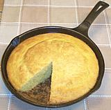

|
CornbreadUSA Southeast | ||||
| Serves: Effort: Sched: DoAhead: |
var ** 40 min Yes |
Corn Bread is the bread of the American South. A proper Southern kitchen has a seasoned iron skillet used only for corn bread and kept with the care a chef uses for his omelet pan. A real Southern cornbread is made with buttermilk and doesn't contain sugar. | |||
|
|
----- 1 1/2 2 1 1 1/2 ----- 3/4 1/4 2 ----- ar |
--- c c T t t t --- c c --- |
-- Dry Items Yellow Corn Meal Flour, all purpose Sugar (?? 1) Baking Soda Baking Powder Salt -- Wet Items Buttermilk Oil (2) Eggs large ------------- Oil for pan |
Make: - (40 min - 20 min work)
|